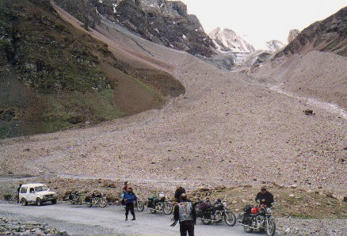
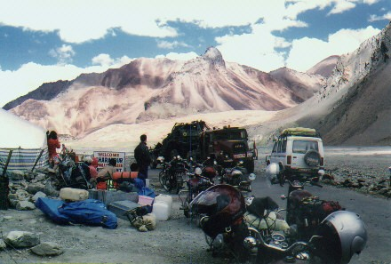
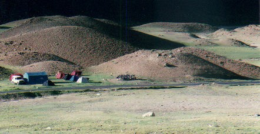

PART 2
Kharma
Road
Day 5: Nagar : Km 0
We get a short course on starting the Royal Enfield Bullet 500 cc singles. Gas on, switch on, pull in the compression release, kickstart slowly to turn over until the ammeter swings , compression release off, then give a good hard boot down on the kickstarter ( same as my Triumph and AJS in the late 60’s ). Half of us succeed, others need help. By the 3rd day we will mostly have the ritual figured out. Peter lets us loose on the steep hotel road. The locals seem to know exactly what is going on, and they keep their distance while we drive on the right…..oops…. left, getting it cemented into foggy minds with jet lag. Brakes….. now what side were they on again ? The front is adjusted loose on purpose for the miles of dirt head, the rear has been upgraded for the high mountain passes. After half an hour of riding , we leave for a nice 40 km loop ride around Manali, the local tourist centre in the Kullu Valley. We ride across the Beas river on a small wooden suspension bridge only 8 feet wide with a good sag in the middle….. ( this will later be minus all it’s decking after a major flood rolls through the valley while we are gone ).
. . View over Beas valley from Ragini hotel Temple in Nagar
. .
We drive another warmup loop to Manali and visit the marketplace, then have lunch at a pizza restaurant up on a hill. Here we see a new 2000 model Bullet with updated instruments and more plastic. I still prefer the old look somehow. We drive home along the north side of the river , which is a smaller road with less traffic and more curves. Very pretty. I enter a village and stop abruptly for a 3 year old girl who has just run out into the road with no warning. Rubber squeals behind me, but both bikes get stopped in time. It is a good wake up call for what lies ahead around every bend on this trip…… kids, goats, cows, yaks, carts, people, buses, tankers, not to mention the lethal army trucks.
. .
Schoolkids
- Nagar ;
Nagar to Manali road
Day 7: D-Day Nagar to Jispa - Km 0 to Km 180
This is it, the day we all are pumped up for. Into the great ‘ Ughknown’, as Chuck Yeager calls it. We will miss the hilltop Ragini hotel, with it’s rooftop open air dining and grand view over the valley, but the mountain passes are waiting for us…… so saddle up and move out. We have seven bikes and seven riders plus two jeeps for the support crew and tent/cooking gear. Peter is the road captain and will stay out infront, Martin will bring up the rear. Each bike has large leather saddlebags that my camera case fits into easily….. nice. Most of us seem to have kayak bags to strap on the rear seats.
Ashek and Raju are in the jeep with bike tools and our leftover personal gear, a big ghetto blaster and Martin’s guitar. Nyima, and Tensing ride in the second jeep with Micky , Pandit , NN plus the cook tent, eating tent, and all the camp gear . The crew jeep will travel independently, usually ahead of us to find camp and get a head start on setting up/cooking. The mechanic jeep will always stay in the rear for any breakdowns.
Halfway up to Rothang La pass
We leave Nagar at 6,000 ft and head north towards the Rothang La ( La is the word for pass ) at 13,000 ft. The paved road travels through the tourist area of Manali, lots of traffic and a vacation feel to the whole area. There is good heli skiing here in the winter Raju tells me. We begin the climb up through green forests on the switchbacks , streams and the odd waterfall coming down off the mountains.
.
. 
There are cows to look out for, sometimes wandering down the road. They have little fear of vehicles…. I guess the Indian custom of avoiding them at all cost has conditioned them to a low stress level. Someone in India told me that " it would be better to run down your own mother than a cow ". We stop for one of our regular breaks part way up the mountain at a food stall. There are old fur coats lined up on a rack for rent, plus lots of rubber boots under them. Many Indians come up from the lowlands on day trips, and go trekking up into the hills. So far the road has all been good bitumen with some dirt patches as we near the summit.
. .
The first summit of many ............ Day treks... " Rent a pony , see the world ".
Soon at Km 88 we are on top of the Rhotang La pass ( Mound of Skulls) at 13,000 ft. There are horses for hire, and people all around. It is a busy little place. This is the furthest many local tourists will come, just beyond the green belt so to speak. Now we start descending into the Chandra river valley. The north side of the pass is much more rugged, the road becomes more broken, with mostly dirt and gravel . There are no trees to be seen, it is rock and rivers. Ahead of us to the north is the Great Himalayan range, with many peaks over 6000 meters, almost 20,000 ft.
.
Selling roasted corn by the road
Down from Rhotang La into the Lahaul valley
We drive down 3,000 ft into the Lahaul valley and stop at a village called Khoksar for a tea break. Lots of small stalls and food choices for the trucks and travelers. Tea is 5 rupees. Then we cross the bridge to the north side and head northwest up the valley. We stop at Keylong, a large village for soup and noodles. It is crowded and we park the bikes near the buses by a large dirt embankment. Unfortunately this spot is also the public washroom for passengers with nowhere else to go, and the urine heavy air that wafts around us is hard to take. Definitely a low point on the trip, and one we never repeated again . In the mountains you do what you have to do for facilities, there usually are none so you get used to turning your back to the road and waiting for a lull in the traffic. No one seems to mind. Helmut stays on his bike with his head on the bars, waiting to escape. He has some of the recurring stomach problems we will all get in India . I find it only mildly annoying, every few days it comes back to visit. Immodium seems to keep it down fairly well .
.
1st camp at Jispa
We remount and thunder off to our tent site at Jispa, beside a broad river. We get the small dome tents up under the trees, then the larger eating tent Peter has just bought for this trip. We are at 3345 meters or 11,000 ft and have done about 160 kms today.
I give Peter and his crew all Photon flashlights I have brought as gifts. They are tiny, run 120 hours and have a very bright LED bulb you can see two miles away.......... everyone is very happy .
Day 8 :
Jispa to Sarchu Km 180 to 275
Back to the future.........
On to Baralach La Pass. We are back on the road fairly early and start to see more army trucks. During the night we have heard convoys go past, up to fifteen trucks together. The other traffic to watch out for are all the fuel tankers heading north loaded. We will pass dozens of both in the next 2 weeks, as well as the regular buses. Luckily the spaces here are large, so the traffic density is low. Overtaking on the narrow cliff roads India style will be a new adventure for me ………
. .
The weather continues sunny, and the bikes are running well. Ashok has checked them at night, filled oil and gas plus fixed a bad clutch. I give him a spare adjustable wrench I brought with me. He obviously will be doing all the wrenching anyway and I have more at home. My only repair on the trip will be a broken speedo cable, the second time Martin and I just wrap it around the handlebar .
We stop at a small Buddhist Stupa by the road. Then we push on to the bridge at Darcha , climb a mountain behind the town, and follow the Bhaga river northeast. A bulldozer is rearranging the road so we wait and enjoy the view.
. .
Soon we are in Zingzingbar …. my favourite place name on the trip. Another tea break at this small tent canteen by the road.
We start climbing up 2000 ft
on very good pavement towards Baralach La pass. It reminds me of a good
road in the Alps, lots of hairpins and no nasty gravel surprises. When
we get to the top it is about 5 degs C at 16,500 ft. Sunny and time
for more pictures. You can feel the change in the air when you walk,
it takes deeper breaths now to get from one spot to another. We are now
crossing the Great Himalaya mountain range.
. .
After the top, things change fast. We head down a rough dirt road hugging the mountainside and cross our first glacier runoff. It is a river about 1 to 2 feet deep. The Bullets go through without complaint. My goretex boots shrug it off.
. .
A few miles away at the bottom are some white tents in a fantastically coloured valley, mostly red hues of rock, blue sky and white puffy clouds. The bare mountain behind is a monolith of streaky red. We stop at the tents for some hot noodles and tea. The people are mostly Tibetan, and chatter with each other as they share the business. It is more like a big extended family.

After more dirt riding up out of the valley for we make camp at Sarchu, 4240 meters or 14,000 ft. We have done 80kms today, but most of it vertical and dusty so it feels a lot further. The tent site is near a stream and there are no trees. The towering mountains are close on both sides, the sun sets early behind them to the west.
. .
Day 9 :
Retreat to Jispa
First thing I see most mornings........... biking nirvana.
We wake up to another sunny day. The monsoons are less of a threat to us now, the altitude and mountains keep them behind us to the our south. We head for the border of Ladakh proper, where we will leave Himachal Pradesh state. When we arrive at the army checkpost there are a lot of civilian trucks parked off to the side, not a good sign. We learn that there is a serious problem ahead and the road is closed. Some terrorists have commandeered a truck to the west of us over the Zanskar range, and gunned down three Buddhist monks who stopped it near a monastery. An German tourist hitchhiking in the truck is also missing , only his papers have been found. ( his body is found 3 weeks later on a glacier ...... the high price of being an eye witness ). The area is very tense, police fear that rioting may break out in Leh, the capital, between the Buddhist and Moslem population. A curfew has been imposed at night, and all roads in and out closed until further notice. This is not looking good.
Looking west towards the Zanskar Mts
We decide to wait for a few hours and see if anything changes. Peter tells everyone that this situation could last for hours....... or days. We should consider an alternate plan. People on the road ahead are stuck in Pang, halfway between two high passes, where facilities are primitive. If we get north and they close the road again, we will be stuck there too. The army controls Pang, and no one leaves after 2pm on normal days. This allows trucks coming down off both passes a clear road into Pang. By afternoon there is still no change at the border so we take a vote, we will run south over Baralach La again to Jispa and take hotel rooms to get clean and plan strategy. We may have to head southeast through the Kunzom Pass to the Spiti valley loop. We have limited fuel and must decide soon on which roads we will burn it. The mood is dark, no one in the group wants to quit yet and lose our goal of Khardung La and the highest roads. This is the main reason we are here.
Retreating south .......
Off we head on a blitz across yesterday’s roads. Henning and I start late in the rear, and I enjoy running at the end of the pack for a change. I get some shots of the others way off in the distance, dust trail specks miles ahead. We reach the hotel and regroup, nice rooms and showers. Hotel Ibex even has a satellite phone and I am able to call my wife in Europe for $ 2 a minute. Not bad for the middle of the Himalayas......... India rocks !
Kharma Road
| ------- To India part 3 --------- |